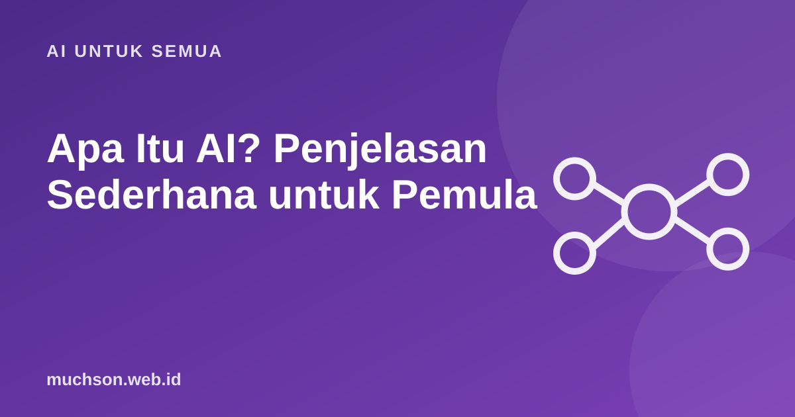

Beranda › Artikel › AI untuk Semua
AI untuk SemuaApa Itu AI? Penjelasan Sederhana untuk Pemula
Kata "AI" ada di mana-mana, dari iklan ponsel sampai berita pekerjaan. Tetapi apa sebenarnya yang dimaksud? Di sini Anda akan mendapat gambaran jernih, tanpa istilah rumit, dan tahu mana yang nyata dan mana yang berlebihan.

AI: komputer yang mengerjakan tugas yang biasanya butuh kecerdasan manusia
Kecerdasan buatan (artificial intelligence, AI) adalah sistem komputer yang mampu melakukan hal seperti mengenali gambar, memahami bahasa, memberi rekomendasi, atau membuat teks. Penting dipahami: AI saat ini adalah alat yang belajar pola dari data, bukan makhluk yang berpikir atau memiliki kesadaran.
Contoh AI yang sudah Anda pakai
- Rekomendasi video dan musik yang "tahu" selera Anda.
- Pembuka kunci ponsel dengan wajah atau sidik jari.
- Terjemahan otomatis dan pengetikan suara.
- Filter spam di email.
- Peta yang memperkirakan kemacetan.
- Chatbot dan asisten yang menjawab pertanyaan, membuat ringkasan, atau menulis draf.
Bagaimana AI "belajar"?
Yang bisa dan yang belum bisa
Tanya jawab
Apakah AI akan menggantikan manusia?
AI menggantikan sebagian tugas, bukan seluruh pekerjaan. Pekerjaan berubah: kemampuan memakai AI dengan baik menjadi nilai tambah.
Apakah AI itu sama dengan robot?
Tidak. AI adalah perangkat lunak. Robot adalah mesin fisik yang bisa memakai AI sebagai otaknya.
Apakah AI selalu benar?
Tidak. AI bisa salah, mengarang, atau bias. Untuk hal penting, periksa dengan sumber tepercaya.